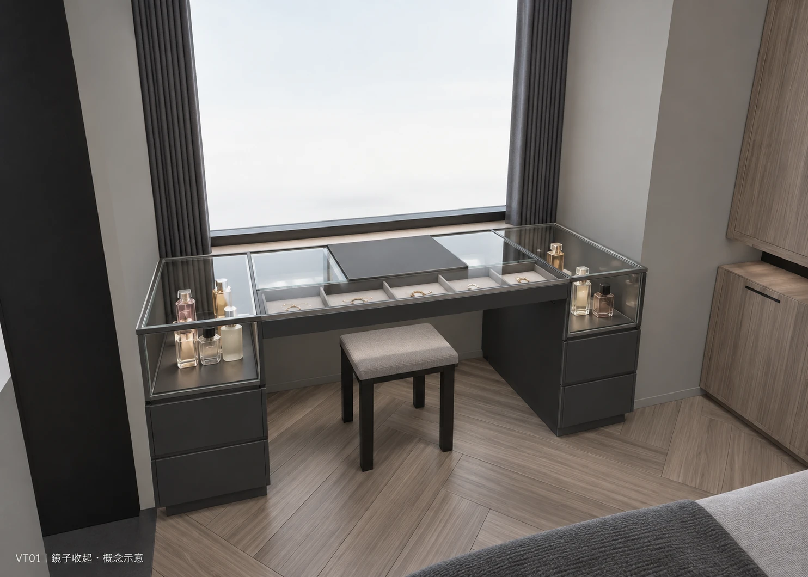
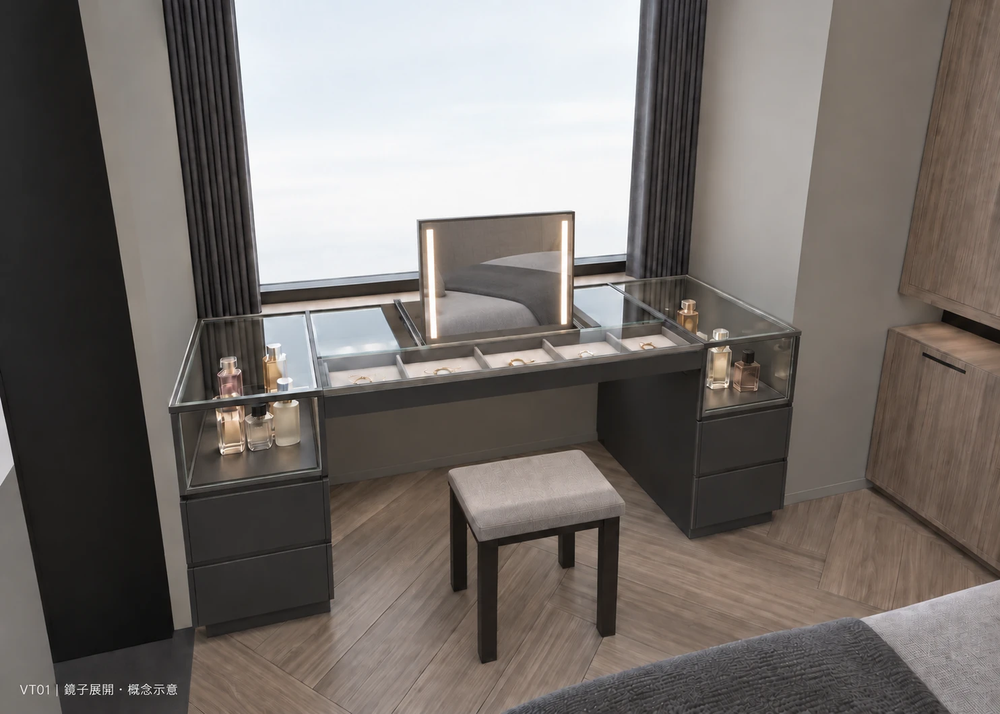
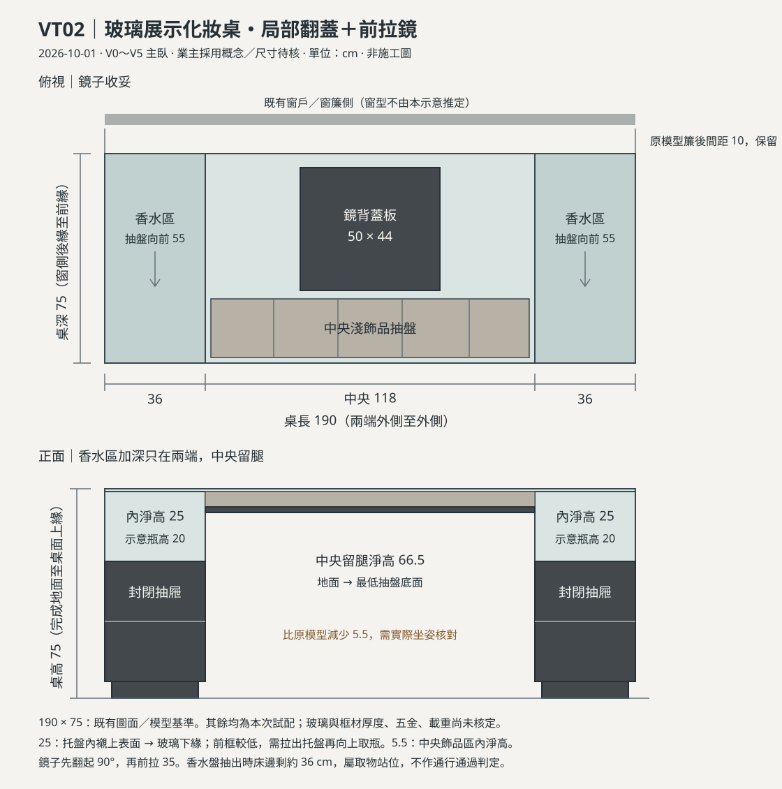

BEDROOM / VANITY · VT02 · 2026.10.01
玻璃之下收好收藏，鏡子隨用隨收。
已採用於 V0～V5 主臥。沿用窗前桌位，兩端放香水、中央展示飾品，下方保留坐姿空間。
鏡子以局部不透光蓋板收平，使用時先翻起，再向座位前拉。


到模型裡操作
選擇版本後，打開「設備控制」，按「近看化妝桌」。可分別操作鏡子、飾品抽盤、左右香水盤與椅凳。
收納與使用尺度
- 原桌位維持 190 × 75 cm、桌高 75 cm；均為圖面／模型基準。
- 兩端香水區：托盤內襯上緣至玻璃下緣 25 cm，按含瓶蓋 20 cm 高的瓶子試配，需確認實際瓶高。
- 中央飾品區：內淨高 5.5 cm；地面至最低抽盤底面 66.5 cm，需用實際椅凳試坐。
- 香水盤拉出 55 cm 時，盤前至床邊約剩 36 cm；這是取物狀態，取完需收回再通行。
查看平面與立面尺寸示意

AI 圖為概念示意，窗外與瓶罐陳列不代表實際現況或核定容量。玻璃厚度及支承、滑軌承重、防夾、插座、窗扇開啟與坐姿仍須現場及施工圖核定。V4／V5 保留停用狀態。